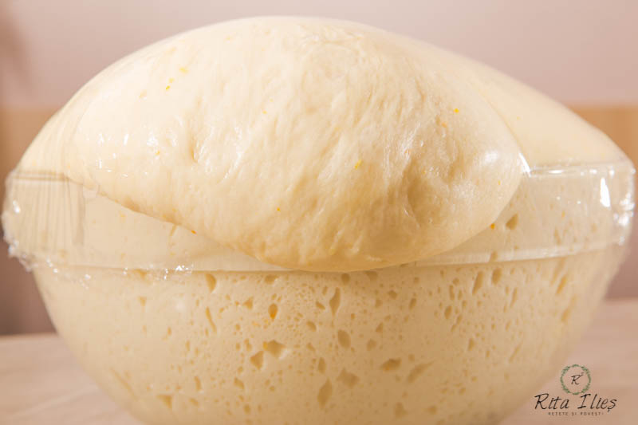
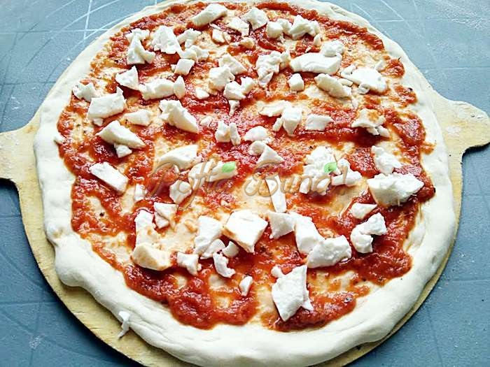

Pizza Napoletana autentica
Ei bine, eu sunt aici sa iti arat ca poti face o pizza chiar si mai buna fata de multe alte restaurante de top.
Ce ingrediente ne trebuie pentru reteta de pizza napoletana?
Pentru aluat:
- 300g faina manitoba

- 200ml apa
- 6gr sare
- 2g drojdie proaspata
Punem cantitatea de apa indicata si drojdia in vasul robotului. Adaugam 100 g faina Manitoba (tip 000 in Romania) si amestecam bine.
Adaugam treptat faina ramasa (50 g Manitoba si 150 g faina tip 00), iar in cele din urma sarea. Framantam bine.
Aluatul ce va rezulta va fi unul destul de moale, dar elastic. Formam o bila pe care o vom lasa acoperita pret de 20 de minute la temperatura camerei.
Luam aluatul nostru, il punem pe o planseta presarata cu faina si ii „dam forta”, formand din nou o bila, fie prin impaturiri, fie prin miscari circulare daca avem o oarecare familiaritate cu astfel de procedee.
Aranjam bila noastra de aluat intr-un bol acoperit cu o pelicula transparenta si o lasam la temperatura camerei timp de aproximativ doua ore.
Odata trecut acest interval de timp, luam aluatul nostru, il impartim in doua parti egale si formam doua bile de aluat.
Dospirea aluatului
Pozitionam aluatul nostru in doua cutii de plastic sau sticla inchise ermetic si le punem la odihna in frigider timp de… 12 ore.
Da, ati auzit bine: 12 ore. In acest timp aluatul nostru va avea o dospire extrem de lenta si o excelenta maturizare, conditii absolut necesare pentru o pizza savuroasa si usor digerabila: pizza napoletana, altfel zis.
Dupa acest interval de timp, scoatem din frigider bilele noastre de aluat si le lasam la temperatura camerei, tot acoperite, in jur de doua ore, pana ce aluatul nostru va dobandi temperatura mediului inconjurator.

Condimentarea pizzei
Condimentam pizza cu sos de rosii, mozzarella si busuioc

Cum se coace pizza napoletana:
Preincalzim la temperatura maxima (220-250 de grade Celsius) si lasam pizza noastra timp de circa 10 minute (timpul poate varia in functie de cuptor).
Reteta inspirata de:
Acest Site
Pofta Buna!